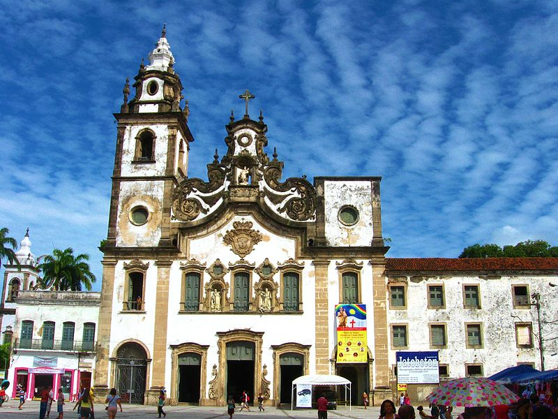
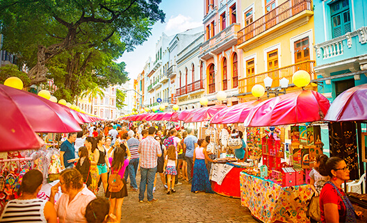

O Marco Zero no Recife Antigo é um dos pontos turísticos mais importantes para quem deseja conhecer a capital de Pernambuco. Isso porque é um local de importância histórica que conta o nascimento da cidade e possui forte referência cultural.
É o lugar de referência onde a cidade nasceu e todas as medidas oficiais de distâncias rodoviárias usam como ponto de partida. Seu nome é, na verdade, Praça Rio Branco e fica ao lado do Porto de Pernambuco.
Principais pontos turísticos ao redor do Marco Zero no Recife Antigo:
O Marco Zero Recife é uma atração por si só, mas, além disso, está rodeado por outros pontos turísticos igualmente imperdíveis.
Paço do Frevo

O Paço do Frevo é um espaço cultural dedicado à preservação e promoção do frevo, ritmo musical e dança típicos de Pernambuco, localizado nas proximidades do monumento.
Igreja de Nossa Senhora do Carmo

Outro atrativo nas redondezas é a Igreja de Nossa Senhora do Carmo, construída no século XVIII e considerada obra-prima do barroco pernambucano.
Feiras de artesanato

Se você deseja aproveitar a sua visita para ir às compras, não deixe de visitar uma das feiras de artesanato distribuídas nas imediações do Marco Zero.
Nessas feiras, como o Mercado de Artesanato, você poderá adquirir produtos típicos, como rendas, bordados, cerâmicas e esculturas.
Para mais conteúdos como esse cadastre-se no nosso site e recebe semanalmente atualizações de locais para visitar ou clique aqui!